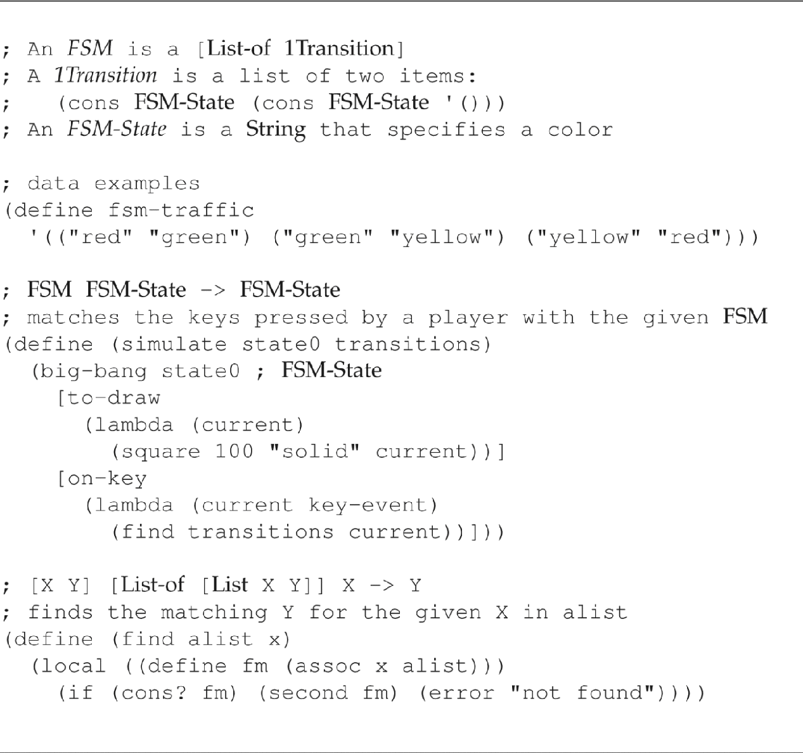
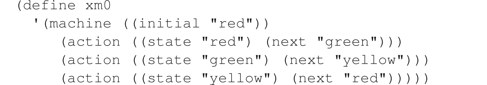
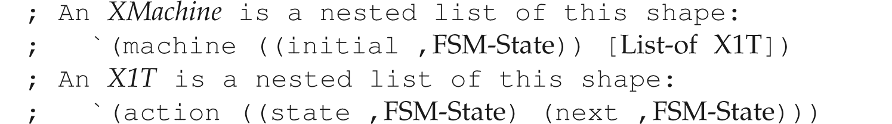
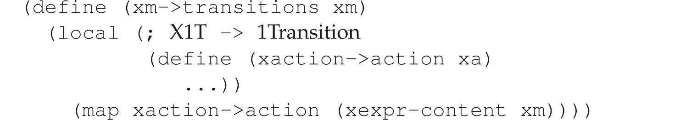
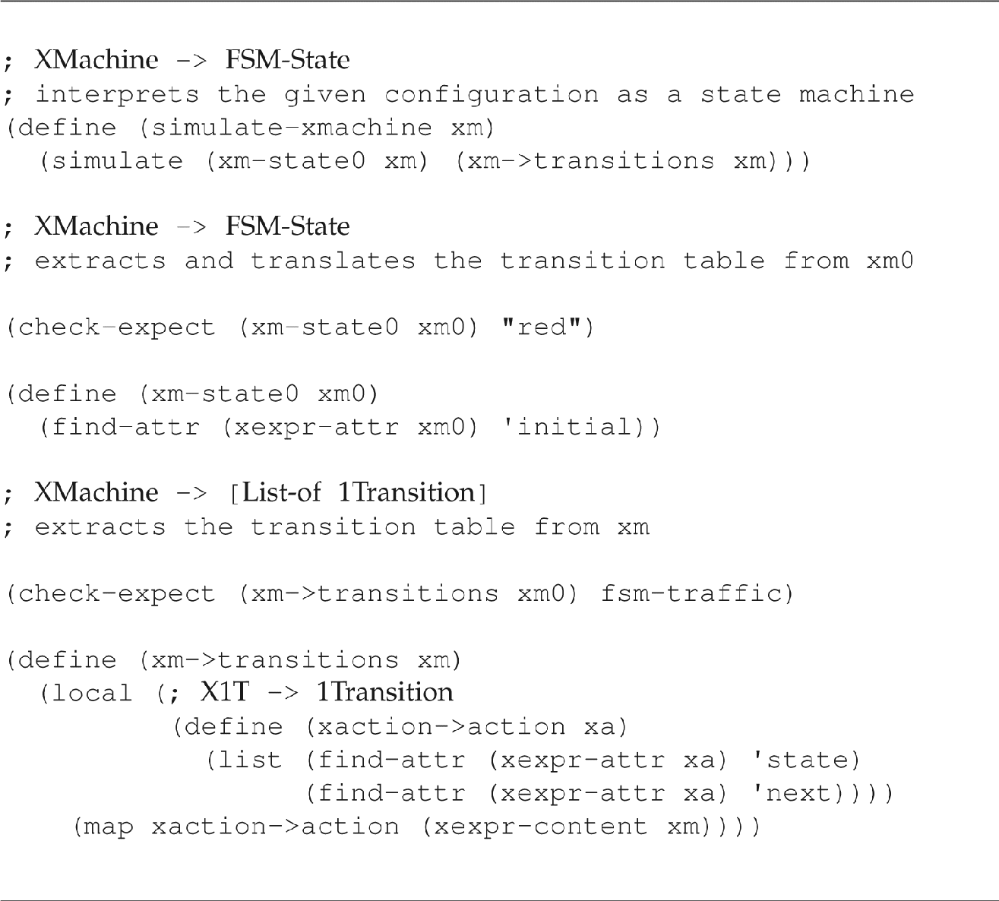

22.3 Domain-Specific Languages
Engineers routinely build large software systems that require a configuration for specific contexts before they can be run. This configuration task tends to fall to systems administrators who must deal with many different software systems. The word “configuration” refers to the data that the main function needs when the program is launched. In a sense a configuration is just an addition argument, though it is usually so complex that program designers prefer a different mechanism for handing it over.
Since software engineers cannot assume that systems administrators know every programming language, they tend to devise simple, special-purpose configuration languages. These special languages are also known as domain-specific languages (DSL). Developing these DSLs around a common core, say the well-known XML syntax, simplifies life for systems administrators. They can write small XML “programs” and thus configure the systems they must launch.
Because configurations abstract a program over various pieces of data, Paul Hudak argued in the 1990s that DSLs are the ultimate abstractions, that is, that they generalize the ideas of part III to perfection.
While the construction of a DSL is often considered a task for an advanced programmer, you are actually in a position already to understand, appreciate, and implement a reasonably complex DSL. This section explains how it all works. It first reacquaints you with finite state machines (FSMs). Then it shows how to design, implement, and program a DSL for configuring a system that simulates arbitrary FSMs.
Finite State Machines Remembered The theme of finite state machines is an important one in computing, and this book has presented it several times. Here we reuse the example from chapter 12.8 as the component for which we wish to design and implement a configuration DSL.
For convenience, figure 129 presents the entire code again, though reformulated using just lists and using the full power of ISL+. The program consists of two data definitions, one data example, and two function definitions: simulate and find. Unlike the related programs in preceding chapters, this one represents a transition as a list of two items: the current state and the next one.

Figure 129: Finite state machines, revisited
The main function, simulate, consumes a transition table and an initial state; it then evaluates a big-bang expression, which reacts to each key event with a state transition. The states are displayed as colored squares. The to-draw and on-key clauses are specified with lambda expressions that consume the current state, plus the actual key event, and that produce an image or the next state, respectively.
As its signature shows, the auxiliary find function is completely independent of the FSM application. It consumes a list of two-item lists and an item, but the actual nature of the items is specified via parameters. In the context of this program, X and Y represent FSM-States, meaning find consumes a transition table together with a state and produces a state. The function body uses the built-in assoc function to perform most of the work. Look up the documentation for assoc so that you understand why the body of local uses an if expression.
Exercise 378. Modify the rendering function so that it overlays the name of the state onto the colored square. 
Exercise 379. Formulate test cases for find.
Exercise 380. Reformulate the data definition for 1Transition so that it is possible to restrict transitions to certain keystrokes. Try to formulate the change so that find continues to work without change. What else do you need to change to get the complete program to work? Which part of the design recipe provides the answer(s)? See exercise 229 for the original exercise statement.
Configurations The FSM simulation function uses two arguments, which jointly describe a machine. Rather than teach a potential “customer” how to open an ISL+ program in DrRacket and launch a function of two arguments, the “seller” of simulate may wish to supplement this product with a configuration component.
A configuration component consists of two parts. The first one is a widely used simple language that customers use to formulate the initial arguments for a component’s main function(s). The second one is a function that translates what customers say into a function call for the main function. For the FSM simulator, we must agree on how we represent finite state machines in XML. By judicious planning, chapter 22.1 presents a series of machine examples that look just right for the task. Recall the final machine example in this section:
<machine initial="red">
<action state="red" next="green" />
<action state="green" next="yellow" />
<action state="yellow" next="red" />
</machine>
Compare it to the transition table fsm-traffic from Xexpr representation of this example:

What we are still lacking is a general data definition that describes all possible Xexpr representations of FSMs:

Like XEnum.v2, XMachine describes a subset of all Xexpr. Thus, when we design functions that process this new form of data, we may continue to use the generic Xexpr functions to access pieces.
Exercise 381. The definitions of XMachine and X1T use quote, which is highly inappropriate for novice program designers. Rewrite them first to use list and then cons.
Exercise 382. Formulate an XML configuration for the BW machine, which switches from white to black and back for every key event. Translate the XML configuration into an XMachine representation. See exercise 227 for an implementation of the machine as a program.
Before we dive into the translation part of the configuration problem, let’s spell it out:
Sample Problem Design a program that uses an XMachine configuration to run simulate.
While this problem is specific to our case, it is easy to imagine a generalization for similar systems, and we encourage you to do so.
The problem statement suggests a complete outline:
; XMachine -> FSM-State
; simulates an FSM via the given configuration
(define (simulate-xmachine xm)
(simulate … …))
Following the problem statement, our function calls simulate with two to-be-determined arguments. What we need to complete the definition are two pieces: an initial state and a transition table. These two pieces are part of xm, and we are best off wishing for appropriate functions:
• xm-state0 extracts the initial state from the given XMachine:
(check-expect (xm-state0 xm0) "red")
• xm->transitions translates the embedded list of X1Ts into a list of 1Transitions:
(check-expect (xm->transitions xm0) fsm-traffic)
Since XMachine is a subset of Xexpr, defining xm-state0 is straightforward. Given that the initial state is specified as an attribute, xm-state0 extracts the list of attributes using xexpr-attr and then retrieves the value of the 'initial attribute.
Let’s then turn to xm->transitions, which translates the transitions inside of an XMachine configuration into a transition table:
; XMachine -> [List-of 1Transition]
; extracts & translates the transition table from xm
(define (xm->transitions xm)
'())
The name of the function prescribes the signature and suggests a purpose statement. Our purpose statement describes a two-step process: (1) extract the Xexpr representation of the transitions and (2) translate them into an instance of [List-of 1Transition].
While the extraction part obviously uses xexpr-content to get the list, the translation part calls for some more analysis. If you look back to the data definition of XMachine, you see that the content of the Xexpr is a list of X1Ts. The signature tells us that the transition table is a list of 1Transitions. Indeed, it is quite obvious that each item in the former list is translated into one item of the latter, which suggests a use of map:

As you can see, we follow the design ideas of chapter 16.5 and formulate the function as a local whose body uses map. Defining xaction->action is again just a matter of extracting the appropriate values from an Xexpr.
Figure 130 displays the complete solution. Here the translation from the DSL to a proper function call is as large as the original component. This is not the case for real-world systems; the DSL component tends to be a small fraction of the overall product, which is why the approach is so popular.

Figure 130: Interpreting a DSL program
Exercise 383. Run the code in figure 130 with the BW Machine configuration from exercise 382.